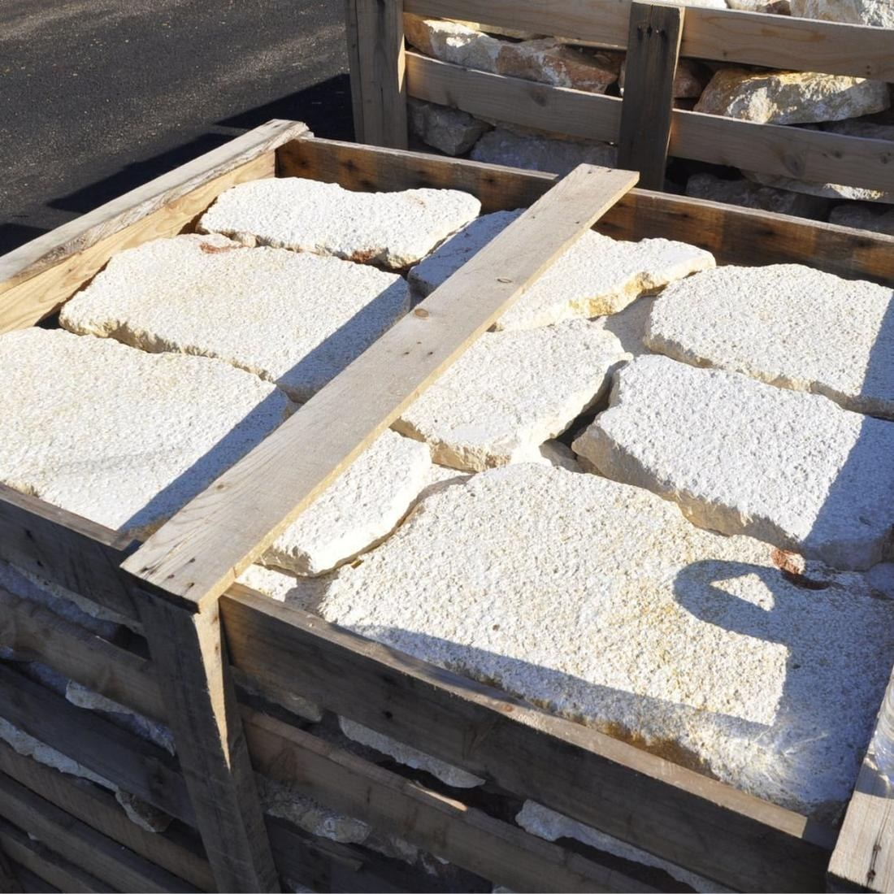
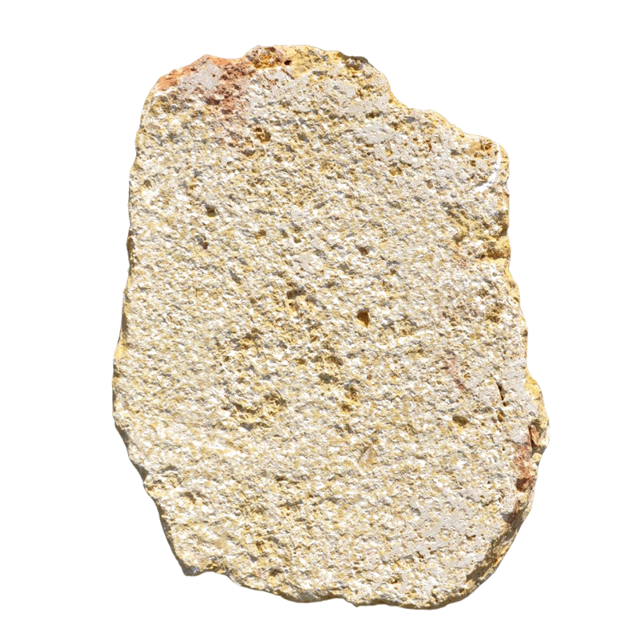

Block steps · bush-hammered tread
Limestone · Egypt · bush-hammered
Garden steps
Irregular limestone slabs, bush-hammered, 3 cm thick, for garden paths, terraces and outdoor steps. For stairs, one-piece treads cut from solid blocks, up to 3 m long: fewer joints and cleaner lines.
Supply
Finish
Bush-hammered top, natural or sawn edges
Applications
Garden paths, terraces, outdoor staircases, pool surrounds
Format
Irregular slabs packed by the m² in crates, or cut to size
Piece size
40 – 80 cm across
Treads
One-piece block steps up to 3 m long, to order
Thickness
3 cm · block steps to order
Good to know
Bush-hammering gives a slip-resistant surface in the wet. Lay on a mortar bed with 1 to 1.5 cm joints; for steps, use the sawn-edge option for a clean nosing. Cut to custom sizes for treads and copings.
Technical data
Compressive
90 – 135 MPa
Density
2 630 – 2 680 kg/m³
Absorption
0.2 – 0.9 %
Frost
Suitable for exterior use
Slip
Bush-hammered: suitable for wet areas
Values typical of the rock type from published regional data; a product-specific test report is issued with each order.

Single slab, bush-hammered
Landscape & Paving